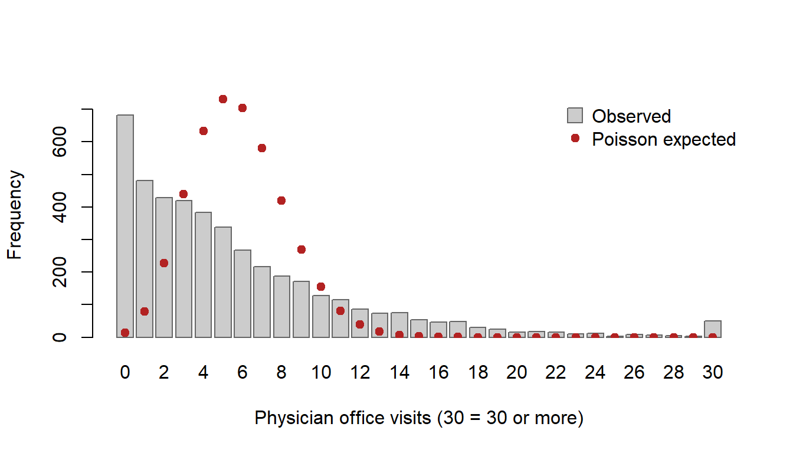

# install.packages("devtools")
devtools::install_github("knightrt-lgtm/nbzinbKnight")Negative Binomial and Zero-Inflated Negative Binomial Regression by IRLS and EM
STA 651 Final Project: the nbzinbKnight R package
2026-11-22
Source:vignettes/articles/report.qmd
1 Introduction
Many responses in applied work are counts: the number of doctor visits, of articles published, of insurance claims. The Poisson regression model is the natural starting point, but it forces the variance to equal the mean. Real count data are usually overdispersed, with a variance well above the mean, and they often contain more zeros than a Poisson model with the same mean can produce. Ignoring overdispersion gives standard errors that are too small and tests that reject too often; ignoring excess zeros gives a poor fit to the most common outcome.
Two standard extensions address these problems. Negative binomial (NB) regression adds a dispersion parameter so that the variance can exceed the mean. Zero-inflated negative binomial (ZINB) regression goes further and treats the data as a mixture of two groups: structural zeros, who always report zero, and an NB group, who may or may not.
This project builds the R package nbzinbKnight, which fits both models without any general-purpose optimizer. NB regression is fitted by iteratively reweighted least squares (IRLS) for the coefficients, alternated with Newton–Raphson for ; ZINB regression is fitted by an EM algorithm whose M-steps are themselves IRLS fits. The goals are to implement these algorithms correctly, to show that they reproduce the established functions MASS::glm.nb() and pscl::zeroinfl(), to check by simulation that the ZINB estimates and standard errors behave as they should, and to use the package to analyse physician visits in the NMES1988 data.
2 Methods
2.1 Negative binomial regression
For a count with covariate vector , the NB2 model has where is an optional offset. Then and , so smaller means more overdispersion and gives the Poisson model. With prior weights (all 1 for an ordinary fit) the log-likelihood is
IRLS for ( fixed). For fixed the model is a GLM with log link and variance function , so Fisher scoring is repeated weighted least squares with working weights and working response The package solves the least-squares step by a QR decomposition of , which gives the same without forming . Iteration stops when no coefficient changes by more than .
Newton–Raphson for ( fixed). The score and second derivative in are $$ \begin{aligned} U(\theta) &= \sum_i a_i\Bigl[\psi(y_i+\theta) - \psi(\theta) + \log\theta + 1 \\ &\qquad\quad - \log(\theta+\mu_i) - \frac{y_i+\theta}{\theta+\mu_i}\Bigr], \\ H(\theta) &= \sum_i a_i\Bigl[\psi'(y_i+\theta) - \psi'(\theta) + \frac{1}{\theta} \\ &\qquad\quad - \frac{2}{\theta+\mu_i} + \frac{y_i+\theta}{(\theta+\mu_i)^2}\Bigr], \end{aligned} $$ with and the digamma and trigamma functions. To keep the update is made on , using and : . As safeguards, a step that would lower the log-likelihood is halved until it does not, and if (the log-likelihood is not concave at that point) a unit step uphill is taken instead.
Outer loop. The fit starts from a Poisson IRLS fit (the limit of the weights, ) and the moment estimate . It then alternates the two updates until the log-likelihood changes by less than .
Standard errors. Following glm.nb(), , treating as known, and .
2.2 Zero-inflated negative binomial regression
In the ZINB model, observation is a structural zero with probability and otherwise comes from : with , , and , where the zero-model covariates may differ from . The marginal mean is . Because each zero contributes , the log of a sum, the log-likelihood is not that of an exponential-family GLM and cannot be maximized by IRLS directly.
EM algorithm. Let if observation is a structural zero. If the were known, the complete-data log-likelihood would split into a logistic regression for and an NB regression for on the non-structural observations, each of which IRLS can fit. EM replaces the unknown by their conditional expectations:
- E-step: if , and if .
- M-step, zero part: maximize , a logistic regression with fractional response , by IRLS with and .
- M-step, count part: maximize , which is exactly the NB fit above with prior weights .
EM starts from the NB fit for and from an IRLS logistic regression of on for , warm-starts each M-step from the previous iterate, and stops when the observed-data log-likelihood changes by less than . EM can never decrease the log-likelihood; the package records it at every iteration and warns if it ever falls. All probabilities are computed on the log scale (plogis(..., log.p = TRUE) and a log-sum-exp for the zero term) to avoid underflow when is near 0 or 1.
Standard errors. EM does not produce an information matrix. After convergence the package computes the Hessian of its own observed-data log-likelihood with respect to numerically with numDeriv::hessian() (differentiation, not optimization), and inverts its negative. As in zeroinfl(), is reported with its standard error; by the delta method.
3 The R package
The package is on GitHub and installs with
Design. The estimation code is split into small internal building blocks, each implementing one equation of the Methods section, and two user-facing fitting functions built from them:
| File | Contents |
|---|---|
R/nb_internal.R |
NB log-likelihood; IRLS update for ; score and second derivative in ; Newton–Raphson for |
R/nbreg.R |
nbreg(), nbreg_control(), and the outer loop with standard errors |
R/zinb_internal.R |
ZINB log-likelihood; E-step; fractional logistic IRLS; numerical-Hessian covariance |
R/zinbreg.R |
zinbreg(), zinbreg_control(), and the EM loop |
R/methods-*.R |
S3 methods for both classes |
The count-part M-step of zinbreg() calls the same function that nbreg() uses, with prior weights , so the NB code is written and tested once. zinbreg() reads two-part formulas y ~ x1 + x2 | z1 + z2 with the Formula package; without |, both parts use the same covariates, as in zeroinfl(). Both functions accept an offset for the count model, as an argument or as offset() in the formula, and give informative errors for invalid responses. They warn if the algorithm reaches its iteration limit without converging or if becomes very large (the Poisson limit). No function in R/ calls optim(), glm(), or any other optimizer or fitting function.
Objects and methods. nbreg() and zinbreg() return S3 objects of class "nbreg" and "zinbreg", containing the coefficients, covariance matrix, and its standard error, the log-likelihood, the number of iterations, a convergence flag, fitted values, and the call. Both classes have print, summary (Wald tables), coef, vcov, logLik (with a df attribute, so AIC() and BIC() work), fitted, residuals (Pearson and response), nobs, and predict methods. For ZINB fits, predict() returns the mean , the count mean , or the zero probability (type = "response", "count", "zero").
Usage.
data("bioChemists", package = "pscl")
fit <- zinbreg(art ~ fem + mar + kid5 + phd + ment | ment, data = bioChemists)
coef(fit, model = "zero")(Intercept) ment
-0.8066566 -0.6094417
AIC(fit)[1] 3124.542
predict(fit, newdata = bioChemists[1:3, ], type = "zero") 1 2 3
0.006226169 0.011392898 0.011392898 Testing. The package has testthat tests that compare both functions with glm.nb() and zeroinfl() on both data sets within the project’s required tolerances, plus tests of offsets, single-covariate and two-part formulas, every S3 method, the monotone EM log-likelihood, and input errors. devtools::check() reports 0 errors, 0 warnings, and 0 notes, and the same check runs on GitHub Actions for macOS, Windows, and Linux.
4 Benchmarking
The script inst/benchmark/benchmark.R fits both models on bioChemists (n = 915) and NMES1988 (n = 4406) with this package and with the reference functions, run with tight tolerances (glm.control(epsilon = 1e-10) and zeroinfl.control(reltol = 1e-12)). The ZINB model uses all five bioChemists covariates in both parts, and the NMES1988 zero model uses hospital, chronic, gender, school, and insurance. Table 1 gives the largest absolute difference for each quantity against the tolerance required by the project; the full side-by-side estimates are in the Appendix.
agree <- do.call(rbind, lapply(c("bioChemists", "NMES1988"), function(ds) {
do.call(rbind, lapply(c(nb = "NB", zinb = "ZINB"), function(mod) {
md <- bench[[ds]][[tolower(mod)]]$max_diff
data.frame(`Data set` = ds, Model = mod, Quantity = md$quantity,
`Max abs. difference` = formatC(md$max_abs_diff, format = "e",
digits = 1),
Tolerance = formatC(md$tolerance, format = "e", digits = 0),
Pass = ifelse(md$pass, "yes", "NO"), check.names = FALSE)
}))
}))
knitr::kable(agree, row.names = FALSE, booktabs = TRUE)| Data set | Model | Quantity | Max abs. difference | Tolerance | Pass |
|---|---|---|---|---|---|
| bioChemists | NB | Coefficients | 1.2e-10 | 1e-05 | yes |
| bioChemists | NB | Standard errors | 2.0e-12 | 1e-05 | yes |
| bioChemists | NB | Theta | 2.4e-11 | 1e-04 | yes |
| bioChemists | NB | Log-likelihood | 2.3e-13 | 1e-04 | yes |
| bioChemists | ZINB | Coefficients | 1.5e-04 | 1e-03 | yes |
| bioChemists | ZINB | Standard errors | 9.5e-05 | 1e-03 | yes |
| bioChemists | ZINB | Log(theta) | 1.3e-05 | 1e-03 | yes |
| bioChemists | ZINB | Log-likelihood | 4.2e-08 | 1e-03 | yes |
| NMES1988 | NB | Coefficients | 5.6e-11 | 1e-05 | yes |
| NMES1988 | NB | Standard errors | 3.8e-12 | 1e-05 | yes |
| NMES1988 | NB | Theta | 1.3e-10 | 1e-04 | yes |
| NMES1988 | NB | Log-likelihood | 0.0e+00 | 1e-04 | yes |
| NMES1988 | ZINB | Coefficients | 2.6e-05 | 1e-03 | yes |
| NMES1988 | ZINB | Standard errors | 1.7e-05 | 1e-03 | yes |
| NMES1988 | ZINB | Log(theta) | 4.4e-06 | 1e-03 | yes |
| NMES1988 | ZINB | Log-likelihood | 1.6e-08 | 1e-03 | yes |
Every quantity is within its tolerance. The NB fits agree with glm.nb() to about , essentially to rounding error, because both programs solve the same score equations by the same algorithm. The ZINB fits agree with zeroinfl() to about in the coefficients and to better than in the log-likelihood. The remaining gap in the coefficients comes from EM’s slow final convergence: once an iteration improves the log-likelihood by less than the algorithm stops, but the likelihood is very flat near its maximum, so the coefficients can still be about from the optimum. The standard errors differ by a similar amount, partly for the same reason and partly because both packages compute the ZINB Hessian numerically, by different methods.
timing <- do.call(rbind, lapply(c("bioChemists", "NMES1988"), function(ds) {
do.call(rbind, lapply(c(nb = "NB", zinb = "ZINB"), function(mod) {
r <- bench[[ds]][[tolower(mod)]]
data.frame(`Data set` = ds, Model = mod,
nbzinbKnight = r$time[["nbzinbKnight"]],
Reference = r$time[["reference"]], Iterations = r$iter,
check.names = FALSE)
}))
}))
knitr::kable(timing, digits = 2, row.names = FALSE, booktabs = TRUE)| Data set | Model | nbzinbKnight | Reference | Iterations |
|---|---|---|---|---|
| bioChemists | NB | 0.02 | 0.04 | 4 |
| bioChemists | ZINB | 1.24 | 0.15 | 111 |
| NMES1988 | NB | 0.06 | 0.14 | 3 |
| NMES1988 | ZINB | 3.81 | 0.75 | 53 |
For NB regression this package is faster than glm.nb(), which goes through the more general glm() machinery. For ZINB it is several times slower than zeroinfl(): EM converges linearly and needs tens to about a hundred iterations, each containing a full weighted NB fit, whereas zeroinfl() updates all parameters at once with a quasi-Newton optimizer. The numerical Hessian for the standard errors adds further time. All fits still take only a few seconds.
5 Simulation study
To check that zinbreg() recovers known parameters and that its standard errors are correct, the script inst/benchmark/simulation.R generates data sets of size from a ZINB model with one covariate in each part, with and independent standard normal (seed 2.0261121^{7}). About 52% of the simulated responses are zero. All 200 fits converged, with a median of 40 EM iterations.
st <- sim$summary
st$parameter <- c("Count: intercept", "Count: x", "Zero: intercept",
"Zero: z", "log(theta)")
names(st) <- c("Parameter", "True", "Mean estimate", "Bias", "MC SD",
"Mean SE", "Coverage")
knitr::kable(st, digits = 3, row.names = FALSE, booktabs = TRUE)| Parameter | True | Mean estimate | Bias | MC SD | Mean SE | Coverage |
|---|---|---|---|---|---|---|
| Count: intercept | 1.000 | 0.992 | -0.008 | 0.069 | 0.071 | 0.950 |
| Count: x | 0.500 | 0.508 | 0.008 | 0.056 | 0.060 | 0.955 |
| Zero: intercept | -0.500 | -0.516 | -0.016 | 0.198 | 0.185 | 0.955 |
| Zero: z | 1.000 | 1.019 | 0.019 | 0.177 | 0.175 | 0.955 |
| log(theta) | 0.693 | 0.730 | 0.037 | 0.240 | 0.231 | 0.925 |
The estimates are centred on the true values: every bias is small compared with the Monte Carlo SD. The mean estimated standard errors are close to the Monte Carlo SDs, so the numerical-Hessian standard errors describe the real sampling variability well. Coverage is between 0.925 and 0.955; with 200 replications, a coverage estimate has a Monte Carlo standard error of about 0.015, so all values are consistent with the nominal 95%. The parameter shows the largest bias (0.037) and the lowest coverage. A positive bias in means is slightly overestimated on average, so the overdispersion is slightly understated. This is not surprising: is identified only through the extra spread of the non-structural counts, and maximum likelihood estimates of dispersion parameters are commonly biased in moderate samples.
6 Data analysis: NMES1988
The NMES1988 data (Deb and Trivedi, 1997; Zeileis, Kleiber, and Jackman, 2008), in the AER package, record the number of physician office visits (visits) in 1987–88 for 4,406 people aged 66 and over in the US National Medical Expenditure Survey. The covariates are the number of hospital stays (hospital), self-perceived health (health: poor, average, excellent), the number of chronic conditions (chronic), gender, years of education (school), and whether the person has private insurance (insurance).
6.1 Descriptive summary
y <- NMES1988$visits
desc <- c(n = length(y), mean = mean(y), variance = var(y),
`variance / mean` = var(y) / mean(y),
`observed zeros` = sum(y == 0),
`Poisson expected zeros` = length(y) * dpois(0, mean(y)))
knitr::kable(t(desc), digits = 2, booktabs = TRUE)| n | mean | variance | variance / mean | observed zeros | Poisson expected zeros |
|---|---|---|---|---|---|
| 4406 | 5.77 | 45.69 | 7.91 | 683 | 13.69 |
tab <- table(factor(pmin(y, 30), levels = 0:30))
bp <- barplot(tab, col = "grey80", border = "grey40",
ylim = c(0, max(tab) * 1.1),
xlab = "Physician office visits (30 = 30 or more)",
ylab = "Frequency")
points(bp, length(y) * dpois(0:30, mean(y)), pch = 19, col = "firebrick")
legend("topright", c("Observed", "Poisson expected"), pch = c(22, 19),
pt.bg = c("grey80", NA), pt.cex = c(2, 1),
col = c("grey40", "firebrick"), bty = "n")
The counts are strongly overdispersed: the sample variance is 45.7, about 7.9 times the mean of 5.77, whereas a Poisson distribution has variance equal to its mean. The zeros tell the same story more dramatically. A Poisson distribution with the observed mean would put only about 14 people at zero visits, but 683 (15.5%) reported none. Figure 1 also shows the opposite failure in the right tail: the Poisson curve is concentrated between about 2 and 10 visits, while the data have many more people with very few visits and many more with very many. A model for these data needs extra variance, and possibly a separate process for the zeros.
6.2 Model fitting
The Poisson model is fitted with glm() for reference; the NB and ZINB models are fitted with this package. The count model uses hospital, health, chronic, gender, school, and insurance; the zero-inflation model uses hospital, chronic, gender, school, and insurance.
f_count <- visits ~ hospital + health + chronic + gender + school + insurance
f_zinb <- visits ~ hospital + health + chronic + gender + school + insurance |
hospital + chronic + gender + school + insurance
m_pois <- glm(f_count, family = poisson, data = NMES1988)
m_nb <- nbreg(f_count, data = NMES1988)
m_zinb <- zinbreg(f_zinb, data = NMES1988)
summary(m_zinb)
Call:
zinbreg(formula = f_zinb, data = NMES1988)
Pearson residuals:
Min 1Q Median 3Q Max
-1.1963 -0.7105 -0.2779 0.3253 17.8452
Count model coefficients (negbin with log link):
Estimate Std. Error z value Pr(>|z|)
(Intercept) 1.193716 0.056661 21.068 < 2e-16 ***
hospital 0.201477 0.020360 9.896 < 2e-16 ***
healthpoor 0.285133 0.045093 6.323 2.56e-10 ***
healthexcellent -0.319336 0.060405 -5.287 1.25e-07 ***
chronic 0.128999 0.011931 10.813 < 2e-16 ***
gendermale -0.080277 0.031024 -2.588 0.00967 **
school 0.021423 0.004358 4.916 8.82e-07 ***
insuranceyes 0.125862 0.041588 3.026 0.00247 **
Log(theta) 0.394147 0.035035 11.250 < 2e-16 ***
---
Signif. codes: 0 '***' 0.001 '**' 0.01 '*' 0.05 '.' 0.1 ' ' 1
Zero-inflation model coefficients (binomial with logit link):
Estimate Std. Error z value Pr(>|z|)
(Intercept) -0.04689 0.26856 -0.175 0.86140
hospital -0.80046 0.42080 -1.902 0.05714 .
chronic -1.24791 0.17831 -6.999 2.59e-12 ***
gendermale 0.64768 0.20011 3.237 0.00121 **
school -0.08377 0.02625 -3.191 0.00142 **
insuranceyes -1.17561 0.22012 -5.341 9.25e-08 ***
---
Signif. codes: 0 '***' 0.001 '**' 0.01 '*' 0.05 '.' 0.1 ' ' 1
Theta: 1.483 (SE 0.05196)
Log-likelihood: -12090.7 on 15 df AIC: 24211.4 BIC: 24307.3
EM iterations: 536.3 Model comparison
pi_hat <- predict(m_zinb, type = "zero")
mu_hat <- predict(m_zinb, type = "count")
exp_zero <- c(
Poisson = sum(dpois(0, fitted(m_pois))),
NB = sum(dnbinom(0, size = m_nb$theta, mu = fitted(m_nb))),
# ZINB: P(Y = 0) = pi + (1 - pi) f_NB(0; mu, theta)
ZINB = sum(pi_hat + (1 - pi_hat) *
dnbinom(0, size = m_zinb$theta, mu = mu_hat)))
fits <- list(Poisson = m_pois, NB = m_nb, ZINB = m_zinb)
cmp <- data.frame(
Model = names(fits),
df = sapply(fits, function(m) attr(logLik(m), "df")),
logLik = sapply(fits, function(m) as.numeric(logLik(m))),
AIC = sapply(fits, AIC),
BIC = sapply(fits, BIC),
`Expected zeros` = exp_zero,
check.names = FALSE)
knitr::kable(cmp, digits = 1, row.names = FALSE, booktabs = TRUE)| Model | df | logLik | AIC | BIC | Expected zeros |
|---|---|---|---|---|---|
| Poisson | 8 | -17971.6 | 35959.2 | 36010.4 | 46.7 |
| NB | 9 | -12170.6 | 24359.1 | 24416.6 | 608.0 |
| ZINB | 15 | -12090.7 | 24211.4 | 24307.3 | 708.9 |
The Poisson model is far behind both alternatives. Its log-likelihood is 5801 lower than the NB model’s, at the cost of a single extra parameter (), and it predicts only 47 zeros against 683 observed.
Allowing overdispersion fixes most, but not all, of the problem. The NB model predicts 608 zeros, still 75 short of the observed count. Unlike in the bioChemists example, overdispersion alone does not account for the zeros here.
The ZINB model predicts 709 zeros, closer to the observed 683 (it slightly overshoots), and raises the log-likelihood by a further 79.8 with 6 extra parameters. Both information criteria prefer it: AIC is 147.7 lower than for the NB model and BIC, which penalizes the extra parameters more heavily, is still 109.3 lower. We do not use a likelihood-ratio test of NB against ZINB: the NB model corresponds to , which lies on the boundary of the ZINB parameter space (), so the usual reference distribution does not apply.
6.4 Interpretation
# Exponentiated estimate with 95% Wald interval: exp(est +/- 1.96 SE)
wald_ci <- function(tab) {
est <- tab[, "Estimate"]
se <- tab[, "Std. Error"]
sprintf("%.2f (%.2f, %.2f)", exp(est), exp(est - 1.96 * se),
exp(est + 1.96 * se))
}
s_nb <- summary(m_nb)$coefficients[-1, ]
s_zc <- summary(m_zinb)$coefficients$count
s_zc <- s_zc[!(rownames(s_zc) %in% c("(Intercept)", "Log(theta)")), ]
s_zz <- summary(m_zinb)$coefficients$zero[-1, ]
# Readable covariate labels for the tables
nice <- function(x) {
lab <- c(hospital = "Hospital stays", healthpoor = "Health: poor (vs average)",
healthexcellent = "Health: excellent (vs average)",
chronic = "Chronic conditions", gendermale = "Male (vs female)",
school = "Years of education", insuranceyes = "Private insurance")
unname(ifelse(x %in% names(lab), lab[x], x))
}
knitr::kable(data.frame(Covariate = nice(rownames(s_nb)),
`NB IRR (95% CI)` = wald_ci(s_nb),
`ZINB count IRR (95% CI)` = wald_ci(s_zc),
check.names = FALSE),
row.names = FALSE, booktabs = TRUE, align = "lcc")| Covariate | NB IRR (95% CI) | ZINB count IRR (95% CI) |
|---|---|---|
| Hospital stays | 1.24 (1.20, 1.29) | 1.22 (1.18, 1.27) |
| Health: poor (vs average) | 1.36 (1.23, 1.49) | 1.33 (1.22, 1.45) |
| Health: excellent (vs average) | 0.71 (0.63, 0.80) | 0.73 (0.65, 0.82) |
| Chronic conditions | 1.19 (1.16, 1.22) | 1.14 (1.11, 1.16) |
| Male (vs female) | 0.88 (0.83, 0.94) | 0.92 (0.87, 0.98) |
| Years of education | 1.03 (1.02, 1.04) | 1.02 (1.01, 1.03) |
| Private insurance | 1.25 (1.16, 1.35) | 1.13 (1.05, 1.23) |
knitr::kable(data.frame(Covariate = nice(rownames(s_zz)),
`OR (95% CI)` = wald_ci(s_zz),
`p-value` = format.pval(s_zz[, "Pr(>|z|)"], digits = 2),
check.names = FALSE),
row.names = FALSE, booktabs = TRUE, align = "lcc")| Covariate | OR (95% CI) | p-value |
|---|---|---|
| Hospital stays | 0.45 (0.20, 1.02) | 0.0571 |
| Chronic conditions | 0.29 (0.20, 0.41) | 2.6e-12 |
| Male (vs female) | 1.91 (1.29, 2.83) | 0.0012 |
| Years of education | 0.92 (0.87, 0.97) | 0.0014 |
| Private insurance | 0.31 (0.20, 0.48) | 9.3e-08 |
Dispersion. The NB model estimates = 1.21 (SE 0.034). At the average fitted mean of 5.9 visits, the NB variance is about 34.6, compared with 5.9 under a Poisson model. In the ZINB model, = 1.48 (SE 0.052) is larger, meaning less overdispersion among the people who do see a physician: some of the extra variation the NB model attributes to is explained by the separate group of structural zeros.
Count part (Table 6). The ZINB count part describes how many visits a person makes, among people who are “at risk” of visiting a physician. Holding the other covariates fixed:
- Each additional hospital stay multiplies the expected number of visits by 1.22 (about 22% more), and each additional chronic condition by 1.14 (14% more).
- Compared with people who rate their health as average, those in poor health make about 33% more visits and those in excellent health about 27% fewer.
- Men make about 8% fewer visits than women, each extra year of education adds about 2%, and private insurance adds about 13%.
All of these intervals exclude 1, and the NB model gives the same directions with similar sizes. The clearest difference is insurance: the NB IRR (1.25) is noticeably larger than the ZINB count IRR (1.13). The ZINB model suggests that much of the insurance effect works through whether a person sees a physician at all, not through how often.
Zero part (Table 7). The zero part models the odds of being a structural zero: a non-user of physician care in this period, as opposed to a user who happened to make no visits (an NB zero). Holding the other covariates fixed:
- Each chronic condition multiplies these odds by 0.29, a 71% reduction: people with chronic illness are much less likely to be non-users.
- Private insurance multiplies the odds by 0.31 (69% lower), consistent with cost being a barrier to any use of care.
- Men have 1.91 times the odds of women of being a non-user, and each extra year of education lowers the odds by about 8%.
- The hospital-stay effect points the same way (OR 0.45) but is not significant at the 5% level (p = 0.057), and its interval is wide.
Chronic conditions and insurance therefore act on both parts of the model: they make a person more likely to use care at all and, among users, to use more of it.
6.5 Which model?
We prefer the ZINB model for NMES1988. Unlike the bioChemists example, the NB model clearly under-predicts the zeros here, both AIC and BIC favour ZINB by a wide margin, and the zero part has several precisely estimated effects with a sensible interpretation: illness and insurance separate people who use physician care from those who do not. The NB model remains a reasonable simpler summary of the count effects, whose directions it reproduces, but it blends the decision to see a physician with the frequency of visits, which the insurance coefficient shows can be misleading.
7 Discussion
The package meets its main goal: IRLS with Newton–Raphson reproduces glm.nb() essentially exactly, EM with IRLS M-steps reproduces zeroinfl() within the required tolerance, and the simulation shows that the ZINB estimates and standard errors behave as large-sample theory predicts. Building the ZINB fit from the NB code also made the structure of the model clear: each EM iteration is just a logistic regression and a weighted NB regression.
The approach has limitations. EM converges linearly, so ZINB fits are slower than zeroinfl() and stop slightly short of the exact maximum: the coefficients agree to about rather than to rounding error. The ZINB standard errors depend on a numerical Hessian, and the NB standard errors for treat as known, which ignores its estimation uncertainty (as glm.nb() also does). The package supports only the log link for the count part and the logit link for the zero part, an offset only in the count part, and no user-supplied observation weights. Finally, because the NB model sits on the boundary of the ZINB parameter space, the comparison between them relies on information criteria rather than a standard likelihood-ratio test.
Several extensions would be natural. An analytic Hessian of the ZINB log-likelihood would give exact standard errors and remove the dependence on numDeriv. EM could be accelerated (for example with SQUAREM), or followed by a few Newton steps on the full parameter vector once it is close to the maximum. The same EM structure would also fit zero-inflated Poisson models and, with small changes, hurdle models, in which zeros and positive counts come from separate processes.
8 AI-use statement
9 References
- Cameron, A. C. and Trivedi, P. K. (2013). Regression Analysis of Count Data (2nd ed.). Cambridge University Press.
- Deb, P. and Trivedi, P. K. (1997). Demand for medical care by the elderly: A finite mixture approach. Journal of Applied Econometrics, 12(3), 313–336.
- Dempster, A. P., Laird, N. M. and Rubin, D. B. (1977). Maximum likelihood from incomplete data via the EM algorithm. JRSS-B, 39(1), 1–38.
- Lambert, D. (1992). Zero-inflated Poisson regression, with an application to defects in manufacturing. Technometrics, 34(1), 1–14.
- McCullagh, P. and Nelder, J. A. (1989). Generalized Linear Models (2nd ed.). Chapman & Hall.
- Venables, W. N. and Ripley, B. D. (2002). Modern Applied Statistics with S (4th ed.). Springer.
- Wickham, H. and Bryan, J. (2023). R Packages (2nd ed.). O’Reilly.
- Zeileis, A., Kleiber, C. and Jackman, S. (2008). Regression models for count data in R. Journal of Statistical Software, 27(8), 1–25.
Appendix: side-by-side benchmark estimates
| Quantity | Term | nbzinbKnight | Reference | Abs. difference |
|---|---|---|---|---|
| Coefficients | (Intercept) | 0.256144 | 0.256144 | 1.2e-10 |
| Coefficients | femWomen | -0.216418 | -0.216418 | 2.1e-11 |
| Coefficients | marMarried | 0.150489 | 0.150489 | 5.4e-12 |
| Coefficients | kid5 | -0.176415 | -0.176415 | 1.5e-11 |
| Coefficients | phd | 0.015271 | 0.015271 | 1.1e-11 |
| Coefficients | ment | 0.029082 | 0.029082 | 7.3e-12 |
| Standard errors | (Intercept) | 0.137348 | 0.137348 | 2.0e-12 |
| Standard errors | femWomen | 0.072636 | 0.072636 | 7.3e-13 |
| Standard errors | marMarried | 0.082097 | 0.082097 | 9.7e-13 |
| Standard errors | kid5 | 0.052813 | 0.052813 | 4.2e-13 |
| Standard errors | phd | 0.035873 | 0.035873 | 4.0e-13 |
| Standard errors | ment | 0.003214 | 0.003214 | 6.6e-14 |
| Theta | theta | 2.264388 | 2.264388 | 2.4e-11 |
| Theta SE | SE(theta) | 0.271176 | 0.271175 | 1.1e-06 |
| Log-likelihood | logLik | -1560.958338 | -1560.958338 | 2.3e-13 |
| Quantity | Term | nbzinbKnight | Reference | Abs. difference |
|---|---|---|---|---|
| Coefficients | count_(Intercept) | 0.416749 | 0.416747 | 2.3e-06 |
| Coefficients | count_femWomen | -0.195505 | -0.195507 | 2.3e-06 |
| Coefficients | count_marMarried | 0.097584 | 0.097583 | 1.3e-06 |
| Coefficients | count_kid5 | -0.151731 | -0.151732 | 1.7e-06 |
| Coefficients | count_phd | -0.000699 | -0.000700 | 6.4e-07 |
| Coefficients | count_ment | 0.024786 | 0.024786 | 3.1e-07 |
| Coefficients | zero_(Intercept) | -0.191839 | -0.191688 | 1.5e-04 |
| Coefficients | zero_femWomen | 0.635945 | 0.635933 | 1.2e-05 |
| Coefficients | zero_marMarried | -1.499317 | -1.499468 | 1.5e-04 |
| Coefficients | zero_kid5 | 0.628406 | 0.628427 | 2.1e-05 |
| Coefficients | zero_phd | -0.037682 | -0.037715 | 3.3e-05 |
| Coefficients | zero_ment | -0.882218 | -0.882293 | 7.6e-05 |
| Standard errors | count_(Intercept) | 0.143596 | 0.143597 | 6.1e-07 |
| Standard errors | count_femWomen | 0.075592 | 0.075593 | 1.2e-07 |
| Standard errors | count_marMarried | 0.084452 | 0.084452 | 2.2e-08 |
| Standard errors | count_kid5 | 0.054206 | 0.054206 | 1.4e-08 |
| Standard errors | count_phd | 0.036269 | 0.036270 | 1.8e-07 |
| Standard errors | count_ment | 0.003492 | 0.003493 | 2.6e-07 |
| Standard errors | zero_(Intercept) | 1.322724 | 1.322819 | 9.5e-05 |
| Standard errors | zero_femWomen | 0.848851 | 0.848918 | 6.6e-05 |
| Standard errors | zero_marMarried | 0.938588 | 0.938671 | 8.2e-05 |
| Standard errors | zero_kid5 | 0.442758 | 0.442783 | 2.4e-05 |
| Standard errors | zero_phd | 0.307987 | 0.308008 | 2.1e-05 |
| Standard errors | zero_ment | 0.316192 | 0.316228 | 3.6e-05 |
| Log(theta) | Log(theta) | 0.976369 | 0.976357 | 1.3e-05 |
| Log(theta) SE | SE(Log(theta)) | 0.135469 | 0.135469 | 4.3e-07 |
| Log-likelihood | logLik | -1549.990887 | -1549.990887 | 4.2e-08 |
| Quantity | Term | nbzinbKnight | Reference | Abs. difference |
|---|---|---|---|---|
| Coefficients | (Intercept) | 0.929257 | 0.929257 | 5.6e-11 |
| Coefficients | hospital | 0.217772 | 0.217772 | 4.2e-11 |
| Coefficients | healthpoor | 0.305013 | 0.305013 | 2.6e-11 |
| Coefficients | healthexcellent | -0.341807 | -0.341807 | 3.1e-11 |
| Coefficients | chronic | 0.174916 | 0.174916 | 1.2e-11 |
| Coefficients | gendermale | -0.126488 | -0.126488 | 1.3e-12 |
| Coefficients | school | 0.026815 | 0.026815 | 1.1e-12 |
| Coefficients | insuranceyes | 0.224402 | 0.224402 | 3.4e-11 |
| Standard errors | (Intercept) | 0.054591 | 0.054591 | 3.6e-12 |
| Standard errors | hospital | 0.020176 | 0.020176 | 6.2e-13 |
| Standard errors | healthpoor | 0.048511 | 0.048511 | 2.5e-12 |
| Standard errors | healthexcellent | 0.060924 | 0.060924 | 3.8e-12 |
| Standard errors | chronic | 0.012092 | 0.012092 | 7.4e-13 |
| Standard errors | gendermale | 0.031216 | 0.031216 | 2.1e-12 |
| Standard errors | school | 0.004394 | 0.004394 | 2.9e-13 |
| Standard errors | insuranceyes | 0.039464 | 0.039464 | 2.5e-12 |
| Theta | theta | 1.206604 | 1.206604 | 1.3e-10 |
| Theta SE | SE(theta) | 0.033555 | 0.033555 | 4.2e-07 |
| Log-likelihood | logLik | -12170.553598 | -12170.553598 | 0.0e+00 |
| Quantity | Term | nbzinbKnight | Reference | Abs. difference |
|---|---|---|---|---|
| Coefficients | count_(Intercept) | 1.193716 | 1.193713 | 3.2e-06 |
| Coefficients | count_hospital | 0.201477 | 0.201477 | 3.0e-08 |
| Coefficients | count_healthpoor | 0.285133 | 0.285133 | 6.2e-08 |
| Coefficients | count_healthexcellent | -0.319336 | -0.319336 | 6.4e-09 |
| Coefficients | count_chronic | 0.128999 | 0.129000 | 4.5e-07 |
| Coefficients | count_gendermale | -0.080277 | -0.080277 | 5.9e-07 |
| Coefficients | count_school | 0.021423 | 0.021423 | 3.7e-09 |
| Coefficients | count_insuranceyes | 0.125862 | 0.125864 | 1.6e-06 |
| Coefficients | zero_(Intercept) | -0.046888 | -0.046879 | 9.0e-06 |
| Coefficients | zero_hospital | -0.800458 | -0.800483 | 2.6e-05 |
| Coefficients | zero_chronic | -1.247912 | -1.247938 | 2.6e-05 |
| Coefficients | zero_gendermale | 0.647676 | 0.647678 | 2.5e-06 |
| Coefficients | zero_school | -0.083769 | -0.083771 | 1.4e-06 |
| Coefficients | zero_insuranceyes | -1.175611 | -1.175615 | 4.7e-06 |
| Standard errors | count_(Intercept) | 0.056661 | 0.056661 | 6.6e-08 |
| Standard errors | count_hospital | 0.020360 | 0.020360 | 1.2e-08 |
| Standard errors | count_healthpoor | 0.045093 | 0.045093 | 4.2e-08 |
| Standard errors | count_healthexcellent | 0.060405 | 0.060405 | 4.0e-08 |
| Standard errors | count_chronic | 0.011931 | 0.011931 | 1.2e-08 |
| Standard errors | count_gendermale | 0.031024 | 0.031024 | 4.1e-08 |
| Standard errors | count_school | 0.004358 | 0.004358 | 1.7e-08 |
| Standard errors | count_insuranceyes | 0.041588 | 0.041588 | 5.0e-08 |
| Standard errors | zero_(Intercept) | 0.268559 | 0.268558 | 6.2e-07 |
| Standard errors | zero_hospital | 0.420799 | 0.420816 | 1.7e-05 |
| Standard errors | zero_chronic | 0.178310 | 0.178316 | 6.0e-06 |
| Standard errors | zero_gendermale | 0.200112 | 0.200115 | 3.0e-06 |
| Standard errors | zero_school | 0.026253 | 0.026253 | 4.3e-07 |
| Standard errors | zero_insuranceyes | 0.220116 | 0.220121 | 4.5e-06 |
| Log(theta) | Log(theta) | 0.394147 | 0.394143 | 4.4e-06 |
| Log(theta) SE | SE(Log(theta)) | 0.035035 | 0.035035 | 4.0e-08 |
| Log-likelihood | logLik | -12090.722012 | -12090.722012 | 1.6e-08 |